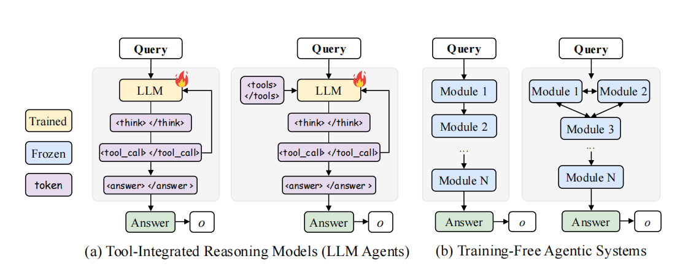

绪论¶
约 2341 个字 1 张图片 预计阅读时间 8 分钟
1. Tool-integrated Reasoning Models与Agentic Systems的定义和差异¶
1.1 研究背景¶
近年来,大型语言模型(LLMs)在推理能力上取得了显著进展,这主要得益于基于结果反馈的强化学习(Reinforcement Learning, RL)。通过微调模型以最大化可验证的奖励,LLMs如DeepSeek-R1和SimpleRL展示出了在自我纠正和多步推理方面的复杂行为能力。为了进一步增强LLMs的能力,研究者们将外部工具(如网页搜索、代码执行)引入推理过程,用于知识检索和精确计算。
在工具增强的LLM推理领域,目前主要存在两种范式:Tool-integrated Reasoning Models(工具集成推理模型)和Agentic Systems with Tool Usage(具有工具使用能力的智能体系统)。

图11.2 Tool-integrated Reasoning Models的定义¶
Tool-integrated Reasoning Models采用单一的、整体式(monolithic)策略,在完整上下文中交替生成思考过程和工具调用。如图1(a)所示,这类模型通过特殊token(如<think></think>、<tool_call></tool_call>)来区分推理步骤和工具使用。
具体而言,模型生成的轨迹可表示为序列:
其中:
- \(s_t\): 当前上下文状态
- \(a_t\): 生成的动作(包含思考内容和工具调用)
- \(e_t\): 工具执行返回的结果
策略模型πθ通过强化学习训练,目标是最大化最终的结果奖励。早期系统仅支持单一工具类型,而近期工作通过将工具元数据编码到提示中,扩展到了多工具设置。
1.3 Agentic Systems with Tool Usage的定义¶
相比之下,Agentic Systems采用多模块协作架构。如图1(b)所示,这类系统由多个专门化的模块组成,每个模块承担特定角色(如规划器planner、编码器coder、批评者critic)并配备专用工具和能力。
Agentic Systems的关键特征包括:
- 任务分解: 将复杂问题分解为子目标
- 模块协作: 通过共享内存和模块间通信进行协调
- 多轮迭代: 在多个回合中逐步解决问题
这种架构使得系统能够处理需要多样化工具、长时间规划或多阶段推理的任务。
1.4 两种范式的核心差异¶
| 对比维度 | Tool-integrated Reasoning | Agentic Systems |
|---|---|---|
| 架构设计 | 单一整体式模型 | 多模块协作系统 |
| 训练方式 | 通过RL训练单一策略 | 通常无训练,依赖手工逻辑或提示工程 |
| 问题处理 | 在全上下文中连续推理 | 分解为子任务,模块间协作完成 |
| 工具使用 | 在单一推理链中交织工具调用 | 不同模块可使用不同专用工具 |
| 扩展性 | 随horizon和工具增多而不稳定 | 架构灵活但协调困难 |
| 泛化能力 | 对未见任务/工具泛化较弱 | 理论上更灵活但缺乏学习能力 |
关键区别在于:
- 单一策略 vs. 模块化: Tool-integrated models用一个模型处理所有事情,而agentic systems通过专门化模块分工协作
- 可训练 vs. 静态: 前者可通过RL学习优化,后者主要依赖预定义逻辑
- 全上下文 vs. 分布式: 前者在完整上下文中推理,后者通过共享内存在模块间传递信息
2. Tool-integrated Reasoning Models的优缺点及Search-R1案例¶
2.1 Tool-integrated Reasoning Models的优势¶
2.1.1 端到端可训练性¶
Tool-integrated reasoning models的最大优势在于端到端的可训练性。通过将可验证的结果奖励扩展到强化学习框架,这些模型能够学习"何时"以及"如何"调用工具,而无需依赖手工设计的规则或启发式方法。
形式化地,优化目标可表示为:
其中 \(R(q,o)\) 是基于结果的奖励,\(\pi_{ref}\) 是参考模型以防止策略崩溃, \(\beta\) 控制KL正则化强度。
2.1.2 统一的推理框架¶
在单一上下文中交织思考和工具调用提供了统一的推理框架。模型可以:
- 在同一个推理链中自然地切换思考和工具使用
- 避免模块间通信和协调的复杂性
- 保持完整的上下文信息,便于理解和调试
2.1.3 特定领域的优秀表现¶
实验表明,在单工具或领域特定场景下,tool-integrated models表现出色:
- 代码执行工具用于数学问题求解(如ToRL, TIR)
- 网页搜索工具用于知识密集型问答(如Search-R1, ReSearch)
- 在各自聚焦的领域,这些模型建立了有竞争力的性能基线
2.2 Search-R1: 代表性的Tool-integrated Reasoning Model¶
Search-R1 是一个典型的 tool-integrated reasoning model，通过强化学习训练 LLMs 进行推理并利用搜索引擎。它展示了在网页搜索场景下的优秀表现，但也体现了这类模型在扩展性和泛化能力方面的局限。
详细介绍: Search-R1: Training LLMs to Reason and Leverage Search Engines with Reinforcement Learning
2.3 Tool-integrated Reasoning Models的根本局限¶
2.3.1 扩展性挑战(Scalability Issues)¶
随着以下因素增长,训练变得越来越不稳定:
- 时间跨度(Horizon)延长: 长序列推理中的credit assignment问题加剧
- 工具种类增多: 单一策略难以掌握多种工具的使用模式
- 环境动态变化: 工具反馈导致的状态分布偏移
实验证据显示,Search-R1在非搜索任务上性能下降显著:
- 数学推理(AIME24): 仅10.0% (vs. ToRL的20.0%)
- 这表明专门化带来的代价——在特定工具上的优化牺牲了跨领域能力
2.3.2 泛化能力不足¶
Tool-integrated models在跨领域泛化方面存在脆弱性:
- 搜索增强模型(Search-R1, ReSearch)在数学任务上表现平平
- 代码增强模型(TIR, ToRL)在搜索任务上缺乏优势
- 单一整体策略无法同时精通多种工具类型
这种局限源于:
- 训练数据的领域偏向
- 单一策略容量的限制
- 工具使用模式的冲突(如何时搜索 vs. 何时编码)
2.3.3 长Horizon的Credit Assignment困难¶
在多步推理中,将最终奖励归因到具体的中间决策极具挑战性:
问题示例:
难点: 错误是由于查询A不当、推理C有误,还是查询B的问题?
现有方法的局限:
- 轨迹级奖励: 只有最终成功/失败信号,无法精确归因
- 启发式中间奖励: 容易引入偏差,且难以大规模设计
- 结果: 训练不稳定,推理时的决策质量不可靠
这凸显了单一策略在复杂工具使用场景中的脆弱性。
2.4 小结¶
Tool-integrated reasoning models在特定领域证明了RL驱动工具学习的价值,但其单一整体策略的范式在面对多样化工具、长时间规划和跨领域任务时显示出根本性局限。这为可训练的模块化智能体系统指明了演进方向。
3. Trainable Agentic Systems: 融合两种范式的优势¶
3.1 传统Agentic Systems的困境¶
虽然agentic systems通过模块化提供了灵活性,但大多数系统保持训练无关(training-free):
- 依赖手工设计的逻辑或提示策略
- 模块间协调由静态规则控制
- 无法从经验中学习改进协作策略
关键问题: 手工逻辑无法可靠捕获:
- 模块何时以及如何协作
- 如何适应动态演化的工具输出
- 如何从早期错误中恢复
一些工作尝试通过离线训练(如监督微调或偏好优化)改进关键模块,但这些方法:
- 与实时动态解耦: 在静态数据集上训练,无法反映真实交互
- 学习信号弱: 难以从下游成功/失败中学习
- 稀疏奖励下低效: 无法有效处理长horizon的credit assignment
结果:传统agentic systems在动态环境中表现出脆弱的适应性和低效的协作。
3.2 Trainable Agentic Systems的核心理念¶
核心思想: 在保留模块化架构优势的同时,通过在线强化学习直接优化关键模块。
设计原则:
- 模块化架构: 专门化的模块(如planner, executor, verifier)各司其职
- 在线优化(In-the-flow): 在真实的多轮交互循环中训练策略
- 端到端学习: 从最终结果反馈中学习改进协作策略
这种范式试图回答:
如何让agentic systems既灵活又可学习?既模块化又协调高效?
3.3 AgentFlow: Trainable Agentic Systems的实践¶
AgentFlow 是 trainable agentic systems 的代表性工作，展示了如何通过在线强化学习优化模块化 agent 系统。它在保持模块化架构优势的同时，实现了端到端的学习和优化。
详细介绍: IN-THE-FLOW AGENTIC SYSTEM OPTIMIZATION FOR EFFECTIVE PLANNING AND TOOL USE
参考资源¶
创建日期: January 23, 2026 15:18:31